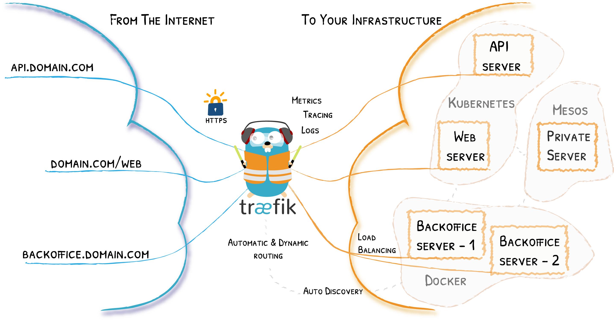

Traefik¶
1. Introducción¶
Un proxy inverso es un servidor que se sitúa delante de uno o varios servidores web, e intercepta las solicitudes de los clientes. Esto es diferente de un proxy de reenvío, en el que el proxy se sitúa delante de los clientes. Con un proxy inverso, cuando los clientes envían solicitudes al servidor de origen de un sitio web, el servidor de proxy inverso intercepta esas solicitudes en el perímetro de la red. El servidor proxy inverso enviará entonces las solicitudes al servidor de origen y recibirá las respuestas del servidor de origen.
La diferencia entre un proxy de reenvío y uno inverso es sutil pero importante. Una forma simplificada de resumirla sería decir que un proxy de reenvío se sitúa delante de un cliente y se asegura de que ningún servidor de origen se comunique nunca directamente con ese cliente específico. Por otro lado, un proxy inverso se sitúa delante de un servidor de origen y se asegura de que ningún cliente se comunique nunca directamente con ese servidor de origen.
1.1. Traefik como proxy inverso¶
Nginx o Apache pueden cumplir perfectamente esta función, aunque hoy en día hay una nueva categoría de proxys reversos pensados para microservicios y también diseñados para “dialogar” con plataformas de contenedores como Docker, Kubernetes, etc. Este es el caso de Traefik.
Traefik is an open-source Edge Router that makes publishing your services a fun and easy experience. It receives requests on behalf of your system and finds out which components are responsible for handling them.

What sets Traefik apart, besides its many features, is that it automatically discovers the right configuration for your services. The magic happens when Traefik inspects your infrastructure, where it finds relevant information and discovers which service serves which request.
The main features include dynamic configuration, automatic service discovery, and support for multiple backends and protocols.
Traefik is based on the concept of EntryPoints, Routers, Middlewares and Services.
- EntryPoints: EntryPoints are the network entry points into Traefik. They define the port which will receive the packets, and whether to listen for TCP or UDP.
- Routers: A router is in charge of connecting incoming requests to the services that can handle them.
- Middlewares: Attached to the routers, middlewares can modify the requests or responses before they are sent to your service
- Services: Services are responsible for configuring how to reach the actual services that will eventually handle the incoming requests.
1.1.1. Edge Router¶¶
Traefik is an Edge Router, it means that it's the door to your platform, and that it intercepts and routes every incoming request: it knows all the logic and every rule that determine which services handle which requests (based on the path, the host, headers, etc.).
1.1.2. Auto Service Discovery¶¶
Where traditionally edge routers (or reverse proxies) need a configuration file that contains every possible route to your services, Traefik gets them from the services themselves.
Deploying your services, you attach information that tells Traefik the characteristics of the requests the services can handle.
2. Iniciar Traefik¶
Se parte del ejemplo que proporciona Traefik en su guía rápida.
El fichero inicial sólo contiene el servicio de nombre traefik que lanza Traefik
services:
traefik:
image: traefik:v3.5
command:
- "--api.insecure=true"
- "--providers.docker=true"
- "--entrypoints.web.address=:80"
ports:
- "80:80"
- "8080:8080"
volumes:
- /var/run/docker.sock:/var/run/docker.sock
Inicie el servicio con el comando docker compose y puede acceder al dashboard:
Because we explicitly enabled insecure mode, the dashboard is reachable on port 8080 without authentication. Do not enable this flag in production. You can access the dashboard at: http://localhost:8080/dashboard/
3. Descubriendo servicios¶
3.1. Ejemplo inicial¶
La guía rápida nos propone añadir un servicio web de nombre whoami que muestra información del equipo sobre el que se ejecuta ese servicio en un fichero de nombre whoami.yml
En Docker, las labels son una forma de añadir metadatos a los contenedores. Traefik usa estas etiquetas para descubrir automáticamente servicios y configurar dinámicamente las rutas, puertos, reglas, etc.
# whoami.yml
services:
whoami:
image: traefik/whoami
labels:
- "traefik.http.routers.whoami.rule=Host(`whoami.localhost`)"
Apply the configuration:
docker-compose -f whoami.yml up -d
Test Your Setup¶
curl http://whoami.localhost
Detener los servicios:
docker compose up --remove-orphans -d
Ampliando el ejemplo inicial¶
Vamos a generar un ejemplo con una dirección "real" y añadir toda la configuración en un único fichero.
Este es el bloque a añadir en docker-compose.yml .Observe qeu se ha modificado el servicio whoami para usar el dominio md.internal:
whoami:
# A container that exposes an API to show its IP address
image: traefik/whoami
labels:
- "traefik.enable=true" # es necesario si la opción de traefik --providers.docker.exposedbydefault=false
- "traefik.http.routers.whoami.entrypoints=http" # valor por defecto, se podróa obviar
- "traefik.http.routers.whoami.rule=Host(`whoami.md.internal`)"
Y se ha añadido al ejemplo de la guía rápida las labels:
"traefik.enable=true": es una opción necesaria en el servicio si en la opciones de traefik estuviera activa la opción--providers.docker.exposedbydefault=false. Por defecto cuando Traefik se conecta al socket Docker expone automáticamente todos los contenedores como servicios. Es decir, si--providers.docker.exposedbydefaultestá en true (valor por defecto), cualquier contenedor puede ser accesible públicamente si tiene un puerto abierto. Contraefik.enablese controla dicha exposición a nivel de servicio."traefik.http.routers.whoami.entrypoints=web". En este caso esta opción no es necesaria ya quewebywebsecureson entrypoints ya definidos en Traefik cuando no defines explícitamente otros en la configuración (web se corresponde con el puerto 80).If not specified, HTTP routers are attached to all entry points.
the entryPoints web (port 80), websecure (port 443), traefik (port 8080) and metrics (port 9100) are created by default. The entryPoints web, websecure are exposed by default using a Service.
Para iniciar los servicios
alu@xd13:~/pr/traefik$ docker compose up -d
Traefik descubre este nuevo servicio y lo añade a su configuración creando una ruta que enlaza la dirección whoami.md.internal al servicio.
alu@xd13:~/pr/traefik$ curl -H "Host:whoami.md.internal" localhost
Hostname: fc5ab2a1c07a
IP: 127.0.0.1
...
X-Real-Ip: 172.18.0.1
alu@xd13:~/pr/traefik$
Observe que se prueba el servicio:
* con el comando curl
* el parámetro -H "Host:whoami.md.internal" (ya que la dirección whoami.md.internal no tiene asociada ninguna IP añadimos el campo Host en la petición HTTP)
* como destino localhost: si intentamos acceder a la dirección whoami.md.com (en el navegador o haciendo ping) dará error ya que no existe ese host ni ese dominio y no hay ninguna IP asociada.
Para resolver la IP de un nombre de host se consulta primero el fichero /etc/hosts y si no hay correspondencia a los servidores DNS. Para hacer una prueba más cercana a la realidad se asocia en ese fichero el nombre whoami.md.internal a la dirección local 127.0.0.1, Y ya podría usar ese nombre en sus pruebas en local con el navegador, etc.
alu@xd13:~/pr/traefik$ sudo nano /etc/hosts
alu@xd13:~/pr/traefik$ cat /etc/hosts
127.0.0.1 whoami.md.internal localhost
127.0.1.1 xd13
...
alu@xd13:~/pr/traefik$
Puede probar ahora con ping la resolución del nombre a IP:
alu@xd13:~/pr/traefik$ ping whoami.md.internal
PING whoami.md.internal (127.0.0.1) 56(84) bytes of data.
64 bytes from whoami.md.internal (127.0.0.1): icmp_seq=1 ttl=64 time=0.064 ms
64 bytes from whoami.md.internal (127.0.0.1): icmp_seq=2 ttl=64 time=0.088 ms
^C
--- whoami.md.internal ping statistics ---
2 packets transmitted, 2 received, 0% packet loss, time 1021ms
rtt min/avg/max/mdev = 0.064/0.076/0.088/0.012 ms
alu@xd13:~/pr/traefik$
Y ahora puede acceder con curl sin la opción -H (o desde el navegador web)
alu@xd13:~/pr/traefik$ curl whoami.md.internal
Hostname: 5d2d95b8f9b3
IP: 127.0.0.1
IP: 172.19.0.3
...
alu@xd13:~/pr/traefik$ firefox whoami.md.internal &
[1] 9050
alu@xd13:~/pr/traefik$
Añada ahora otras dos direcciones (que se usan en apartados posteriores) al fichero /etc/hosts:
web.md.internal(se asociará a un servidor nginx)php.otrodominio.internal(se asociará a un servidor PHP)
alu@xd13:~/pr/traefik$ sudo nano /etc/hosts
alu@xd13:~/pr/traefik$ cat /etc/hosts
127.0.0.1 php.otrodominio.internal web.md.internal whoami.md.internal localhost
127.0.1.1 vm
...
alu@xd13:~/pr/traefik$
3.2. Servicio web nginx¶
En este apartado se añade un servidor web nginx. En este caso se asocia el host web.md.internal al servicio. El bloque a añadir en docker-compose.yml sería:
nginx:
image: nginx
labels:
- "traefik.enable=true"
- "traefik.http.routers.nginx.entrypoints=web"
- "traefik.http.routers.nginx.rule=Host(`web.md.internal`)"
Observe que hay que darle un nombre a la "ruta", y se ha usado en las labels entrypoints y rule el mismo nombre del servicio. Para activar dicho servicio:
alu@xd13:~/pr/traefik$ docker compose up -d nginx
[+] Running 1/1
✔ Container p04_traefik-nginx-1 Started 0.0s
alu@xd13:~/pr/traefik$
Nuevamente Traefik descubre el servicio en tiempo real y lo añade a sus rutas. Ahora puede acceder a la dirección web.md.internal (con curl o firefox)
alu@xd13:~/pr/traefik$ curl web.md.internal
<!DOCTYPE html>
....
<body>
<p>Página inicio servidor nginx. </p>
</body>
</html>
alu@xd13:~/pr/traefik$
3.3. Servidor php¶
En este apartado se añade un servidor web con PHP. Además se usa un TLD distinto (otrodominio.internal). Y como variación el servidor web-PHP mapea un directorio local al contenedor. En el directorio está el fichero index.php que muestra la IP y nombre del host. El contenido del fichero index.php es:
<?php echo 'Server IP: '.$_SERVER['SERVER_ADDR'].nl2br(" \n");?>
<?php echo 'Hostname: '.gethostname().nl2br(" \n");?>
Se añade el nuevo servicio a docker-compose.yml. Observe el nombre de las rutas usado (phpserver)y el valor de Host:
...
phpserver:
image: php:apache
volumes:
- ./html:/var/www/html
labels:
- "traefik.enable=true"
- "traefik.http.routers.phpserver.entrypoints=web"
- "traefik.http.routers.phpserver.rule=Host(`php.otrodominio.internal`)"
Se lanza el servicio:
alu@xd13:~/pr/traefik$ docker compose up -d phpserver
[+] Running 1/1
✔ Container p04_traefik-phpserver-1 Started 0.1s
alu@xd13:~/pr/traefik$
Y pruebe el nuevo servicio (en consola y navegador):
alu@xd13:~/pr/traefik$ curl php.otrodominio.internal
Server IP: 172.20.0.5 <br />
Hostname: 93206dc48cea <br />
alu@xd13:~/pr/traefik$ firefox php.otrodominio.internal &
4. Escalar el servicio: balanceo de carga¶
Puede "escalar" este último servicio creando replicas con la opción --scale:
alu@xd13:~/pr/traefik$ docker compose up -d --scale phpserver=3
[+] Running 6/6
✔ Container p04_traefik-reverse-proxy-1 Running 0.0s
✔ Container p04_traefik-nginx-1 Running 0.0s
✔ Container p04_traefik-whoami-1 Running 0.0s
✔ Container p04_traefik-phpserver-1 Running 0.0s
✔ Container p04_traefik-phpserver-3 Started 0.0s
✔ Container p04_traefik-phpserver-2 Started 0.1s
alu@xd13:~/pr/traefik$
Si accede ahora al servicio puede comprobar cómo responden las distintas replicas ya que traefik hace balanceo de carga:
alu@xd13:~/pr/traefik$ curl php.otrodominio.internal
Server IP: 172.20.0.5 <br />
Hostname: 93206dc48cea <br />
alu@xd13:~/pr/traefik$ curl php.otrodominio.internal
Server IP: 172.20.0.6 <br />
Hostname: a23b9ac33c77 <br />
alu@xd13:~/pr/traefik$ curl php.otrodominio.internal
Server IP: 172.20.0.7 <br />
Hostname: 8ecfc43015ab <br />
alu@xd13:~/pr/traefik$ curl php.otrodominio.internal
Server IP: 172.20.0.5 <br />
Hostname: 93206dc48cea <br />
alu@xd13:~/pr/traefik$
5. Ejercicio propuesto¶
Añadir a traefik un servicio Wordpres en el dominio miblog.example.internal. Tenga en cuenta que son dos servicios: wordpress y la base da datos.
6. Enlaces¶
7. Anexo: Fichero docker-compose.yml completo¶
# compose.yml
services:
traefik:
image: traefik:v3.5
command:
- "--api.insecure=true"
- "--providers.docker=true"
- "--entrypoints.web.address=:80"
ports:
- "80:80"
- "8080:8080"
volumes:
- /var/run/docker.sock:/var/run/docker.sock
whoami:
# A container that exposes an API to show its IP address
image: traefik/whoami
labels:
- "traefik.enable=true" # es necesario si la opción de traefik --providers.docker.exposedbydefault=false
- "traefik.http.routers.whoami.entrypoints=web" # valor por defecto, se podróa obviar
- "traefik.http.routers.whoami.rule=Host(`whoami.md.internal`)"
nginx:
image: nginx
labels:
- "traefik.enable=true"
- "traefik.http.routers.nginx.entrypoints=web"
- "traefik.http.routers.nginx.rule=Host(`web.md.internal`)"
phpserver:
image: php:apache
volumes:
- ./html:/var/www/html
labels:
- "traefik.enable=true"
- "traefik.http.routers.phpserver.entrypoints=web"
- "traefik.http.routers.phpserver.rule=Host(`php.otrodominio.internal`)"
Aviso: en este enunciado se usa como TLD para los ejemplos
.internal. Es uno de los dominios recomendados para Private DNS Namespaces, entre los que podría usar.intranet,.private,.corp,.homeo.lan. En prácticas posteriores se usará un dominio DNS real.